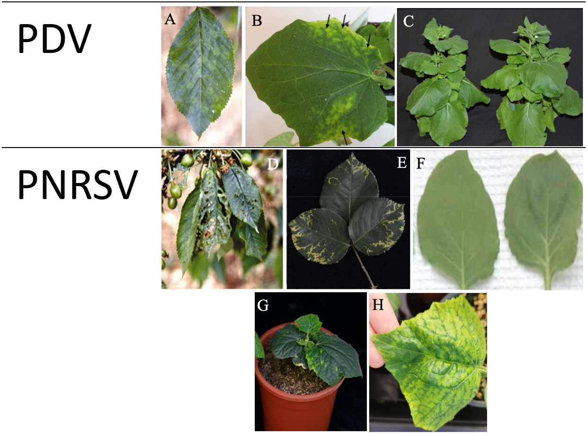
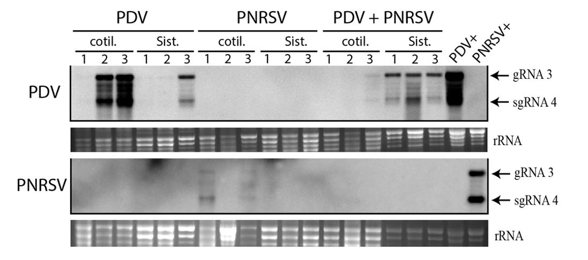
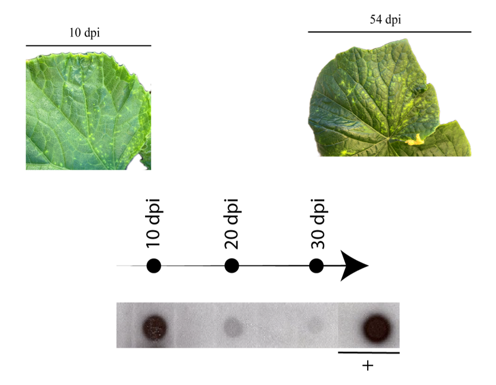
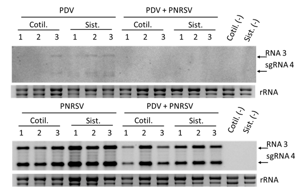

1.Introducción
PDV y PNRSV son agentes causantes de grandes pérdidas económicas en cultivos de frutales de hueso, tanto en infecciones individuales como, de forma especialmente dañina, en infecciones mixtas. Comprender los mecanismos moleculares asociados al fenotipo de sinergismo entre ambos virus puede ayudar a entender el patosistema y a generar herramientas moleculares que reduzcan los daños en cultivos.
Una de las herramientas más útiles para el estudio de un virus es el diseño de clones infecciosos funcionales y eficientes: no solo ayudan a comprender la interacción huésped-virus, sino que permiten investigar posibles mecanismos de resistencia en los cultivos. Este trabajo se propuso generar clones infecciosos para los virus asociados a "Peach stunt" y evaluar la infectividad de distintas construcciones, tanto para PDV como para PNRSV.
2.Materiales y métodos
Se determinó la secuencia genómica de los extremos 5' y 3' de PDV y 5' de PNRSV mediante un protocolo basado en RACE (stem-loop oligo-dT). A partir de estas secuencias se generaron distintas construcciones de clones infecciosos (tándem y tripartita, con y sin ribozima) mediante clonación, transformación bacteriana y agroinfiltración. La infectividad se evaluó mediante inoculación mecánica y agroinfiltración en plantas de pepino, confirmando la infección con Northern blot, Dot blot y RT-PCR, y monitorizando la carga viral y la sintomatología a lo largo del tiempo.
3.Resultados y discusión
Las construcciones de PNRSV que incluían una citosina (C) antes del sitio de inicio de la transcripción fueron capaces de replicarse, mientras que las que carecían de ella no generaron infección — un efecto que no se observó para PDV. Cada virus, además, requirió una estrategia de construcción distinta: PDV funcionó como construcción tripartita sin ribozima, mientras que PNRSV funcionó tanto en tándem como en tripartita, ambas con ribozima.
A lo largo de la infección por PDV se observó una correlación inversa entre carga viral y sintomatología: mayor carga con síntomas leves a 10 días post-inoculación (dpi), y menor carga con clorosis más intensa a 30 dpi — sugiriendo que el genotipo viral y la eficiencia de supresión del silenciamiento pesan más que la acumulación bruta del virus. La inoculación mecánica produjo, además, una eficiencia de infección notablemente mayor que la agroinfiltración.



En los ensayos de coinfección, la prevalencia de PDV o PNRSV varió según la fuente de inóculo utilizada, apuntando a la concentración relativa —no solo la identidad del virus— como factor determinante en infecciones mixtas. A diferencia de lo observado en almendro y melocotonero, la infección mixta en pepino no reprodujo el sinergismo esperado, sugiriendo un componente específico de huésped en esta interacción.

4.Conclusiones y perspectivas
Aportaciones clave
- Un nucleótido crítico para la replicación de PNRSV: la presencia de una citosina antes del sitio de inicio de la transcripción resultó imprescindible, abriendo una pregunta abierta sobre su papel biológico.
- Cada virus requirió una estrategia de construcción distinta, evidenciando que no existe una receta única en el diseño de clones infecciosos.
- La carga viral no explica por sí sola la severidad de los síntomas, ni el método de inoculación es un detalle menor del protocolo.
- El sinergismo documentado en frutales no se reprodujo en el huésped modelo, motivando la búsqueda de un sistema experimental más adecuado en trabajos futuros.